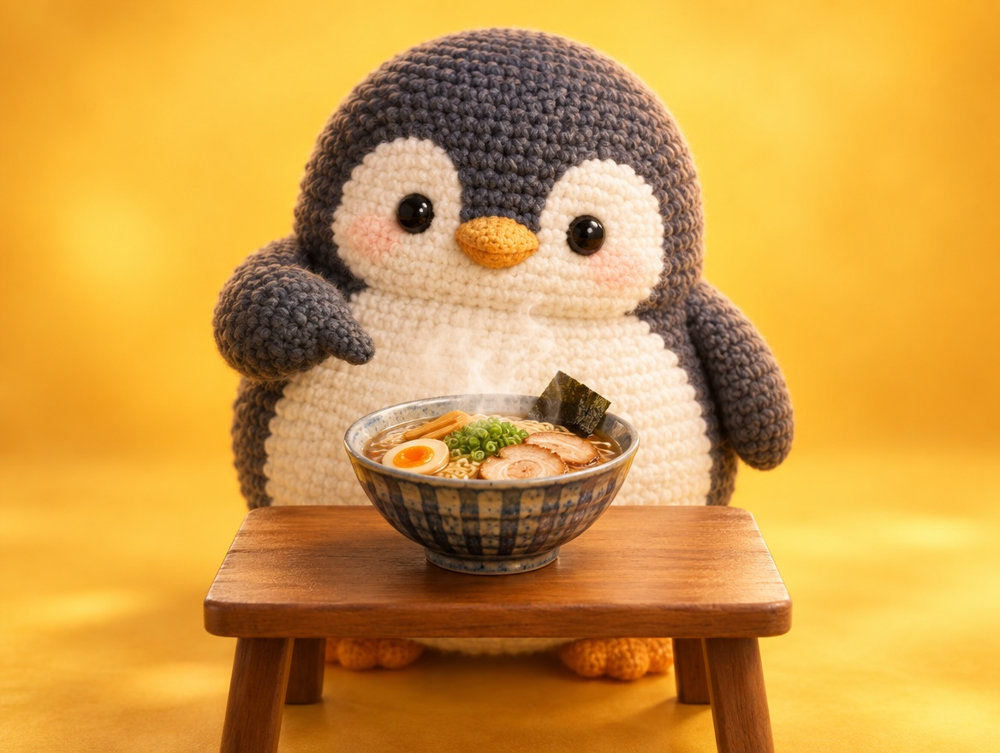

🧪 LAB · 試作 — AIが読書メモから一気に作った記事です。本番の一覧には出していません · 試作の一覧
🐧 EVERYDAY LIFE⚡ 40 SEC
Start practicing with small wishes, like saying what you want to eat 🍜

Sound Familiar
When someone asks, "What do you want to eat?", do you often answer, "Anything is fine"?
Going along with others is kind, but if you do it every time, your own color slowly disappears.
The Point
First, start by practicing saying small "I want this" wishes.
The Reason
If you try to be liked by everyone, you cannot show what you like, and you lose your own character.
Also, when you say, "Anything is fine," the other person may have trouble deciding.
⚡ TRY IT
Say what you want
🍽️ "What do you want to eat?"
📅 "Which day is good for you?"
📍 "Where should we go after that?"
🎉 "OK, it is decided!"
🎨 Your color
Pick an answer and watch your color.
🌫️ Your color faded a little…
🌈 Your color came back! "Great, that is easy to decide!"
🌈 Full color! Friends: "Thanks, you made it easy to decide!"
🙂 Some color is back. Next time, try one more small wish!
🌫️ Oh no… you almost disappeared. Try just one small wish!
For Example
For example, "I want ramen more than a beef bowl" or "Saturday is better" is enough.
If it is this small, nobody is troubled when you say it.
In Short
When you say small wishes again and again, your color comes back little by little.
📚 I wrote this from my reading notes.